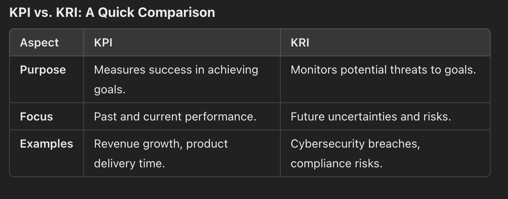

A Morning of Blissful Ignorance
On the serene morning of September 11, 2001, New Yorkers woke to a pleasant 64°F day. A television host on Good Morning America remarked about the great weather, unaware of the tragic events that would unravel in mere hours. It was a sobering reminder: while we forecast and plan based on what we know, the unknown often lurks just beyond the horizon.
This narrative is echoed time and again, in history and across industries. It serves as a reminder that investing in preparedness often outweighs the merits of forecasting, which can be flawed or incomplete.
Forecasting’s Blind Spots: What We Fail to See
Forecasting is essential but inherently limited. The Economist, one of the world’s most reputed financial magazines, missed predicting pivotal events like:
The 2007 Global Financial Crisis – Subprime mortgage risks were underestimated.
COVID-19 Pandemic – Global disruptions were not foreseen in early 2020 projections.
Russia’s Invasion of Ukraine – Despite rising geopolitical tensions, its timing and global impact surprised analysts.
These examples demonstrate that forecasts are prone to blind spots, especially in unprecedented or rapidly evolving scenarios. Instead, organizations must prioritize preparedness, a strategy that anticipates the unexpected and builds resilience.
Preparedness in Action: Learning from Failures
The Victor Prather Incident (1961)
Victor Prather, an astronaut suit tester, demonstrated the reliability of a high-altitude space suit in 1961. After a successful test, he removed his faceplate to breath fresh air after successful pilot run—a seemingly minor action in routine conditions but catastrophic when paired with an unexpected mishap. Prather drowned as water entered his suit during rescue operations. This tragic incident illustrates that even meticulous planning is vulnerable without preparation for unforeseen circumstances.
Boeing’s 737 MAX Crisis
Boeing's 737 MAX crisis was a result of a fatal flaw in the design of the Maneuvering Characteristics Augmentation System (MCAS). The company's focus on rapid production and delivery timelines, often measured by KPIs like production rate and on-time delivery, overshadowed the critical safety implications of the MCAS system. This oversight, coupled with insufficient pilot training, led to two catastrophic accidents, highlighting the importance of prioritizing safety KRIs over short-term production goals.
ISRO’s Chandrayaan-2 Mission
In 2019, the Indian Space Research Organization’s Vikram lander failed its final descent due to a software anomaly. ISRO’s extensive risk planning ensured that most of the mission’s objectives were achieved, but Vikram lander's failure was primarily attributed to a software glitch that caused it to deviate from its planned trajectory during the final descent. This resulted in a hard landing, leading to the loss of communication with the lander. Despite the setback, the Chandrayaan-2 mission was largely successful, with the orbiter continuing to collect valuable scientific data.
CrowdStrike, Azure, and the Great Digital Meltdown
The CrowdStrike and Azure failure stemmed from a security vulnerability when CrowdStrike's Falcon software was allowed to run at a low, zero-level kernel driver in Windows systems. This deep access to the operating system, while intended to offer enhanced security, caused conflicts when a routine system update was deployed. The update interacted poorly with other critical processes, resulting in widespread system crashes and the infamous Blue Screen of Death (BSOD) across millions of devices. This failure disrupted industries globally, including airlines (like British Airways and Southwest), financial institutions, and even government services, which all experienced major outages, leaving operations looking like a "cold turkey" reboot—frozen and paralyzed without their usual digital lifeblood.
KPIs: Accelerating Performance
Key Performance Indicators (KPIs) measure progress and success, offering organizations a clear view of how well they are achieving their goals. KPIs are about speed, growth, and outcomes—they drive the metaphorical car toward the finish line.
Examples of KPIs:
Customer Retention Rate: Indicates how well a company keeps its customers over time.
Revenue Growth: Measures the percentage increase in sales over a specific period.
Website Conversion Rate: Tracks how many visitors take desired actions, such as making a purchase.
KPIs give organizations confidence and direction, but like a car speeding along, they tell only part of the story.
KRIs: Anticipating the Risks
Key Risk Indicators (KRIs) focus on potential threats that could derail progress. They are forward-looking metrics designed to identify and mitigate emerging risks before they materialize.
Examples of KRIs:
Employee Burnout Risk: Measured through excessive overtime hours or low engagement scores.
Cybersecurity Threat Levels: Tracks the number of attempted breaches or vulnerabilities.
Supply Chain Volatility Index: Measures disruptions due to geopolitical or logistical issues.
In our driving analogy, KRIs are the brakes and hazard warnings, providing the cautionary signals needed to navigate safely through uncertainty.

When Success Turns into Risk: KPIs as KRIs
Here are some examples of KPIs that, when pushed too far, can become potential risks:
1. Sales Growth
KPI: Increased sales revenue
Potential KRI: Aggressive sales tactics, compromising customer relationships or product quality. Overemphasis on short-term gains can lead to long-term customer dissatisfaction and brand damage.
2. Productivity
KPI: Increased employee productivity
Potential KRI: Overworked employees, burnout, and decreased quality of work. Excessive pressure to meet unrealistic targets can lead to reduced employee morale and performance.
3. Inventory Turnover
KPI: High inventory turnover rate
Potential KRI: Stockouts, lost sales, and customer dissatisfaction. Overly aggressive inventory reduction can lead to supply chain disruptions and negative customer experiences.
4. Customer Acquisition Cost (CAC)
KPI: Lower CAC
Potential KRI: Compromised customer quality. Focusing too heavily on acquiring new customers at a low cost can lead to a lower-quality customer base that is less profitable in the long run.
5. Employee Satisfaction
KPI: High employee satisfaction
Potential KRI: Stagnation and complacency. Overemphasis on employee satisfaction without challenging work can lead to a lack of innovation and motivation.
Key Takeaways:
Balance is Key: While KPIs are essential for measuring performance, it's crucial to maintain a balance and avoid pushing them to extreme levels.
Monitor for Unintended Consequences: Continuously assess the impact of KPIs on the overall business and adjust strategies as needed.
Prioritize Long-Term Goals: Short-term gains should not overshadow long-term objectives.
Foster a Culture of Continuous Improvement: Encourage a culture of learning and adaptation to address potential risks and seize opportunities.
KPIs vs. KRIs: The Need for a Balanced Approach
Key Performance Indicators (KPIs) focus on achieving success metrics, while Key Risk Indicators (KRIs) serve as early warning systems for potential challenges. Both are essential, yet organizations often overemphasize KPIs at the cost of neglecting KRIs.

Investing in Preparedness: A Framework
Leverage KRIs KRIs provide early warning signals, allowing organizations to act before risks escalate. For instance, monitoring cyberattack attempts (KRI) can guide investment in cybersecurity measures.
Scenario Planning and Simulations Conduct "what-if" analyses to explore responses to unexpected scenarios, such as economic downturns, natural disasters, or supply chain disruptions.
Resilient Systems Design processes and systems to withstand failures. For example, cloud-based backups can mitigate risks from IT outages.
Cultural Shift Foster a mindset where preparedness is valued over optimism. Encourage teams to anticipate challenges and plan for them rigorously.
Examples of KPIs and KRIs Visualizations:
1. E-commerce KPIs Dashboard:
KPI Visualization: Bar charts showing key metrics like Revenue Growth, Customer Acquisition Cost (CAC), and Conversion Rate.
KRI Visualization: Line graphs indicating the churn rate, server downtime, and customer complaints. Alerts or red icons can be used to highlight high-risk thresholds.
2. Healthcare KPIs and KRIs:
KPI Visualization: Pie charts or gauge charts representing patient satisfaction scores, average length of stay (ALOS), and hospital readmission rates.
KRI Visualization: A heatmap for tracking infection rates, emergency room overcrowding, and staff shortages, with warning alerts when these metrics approach critical levels.
3. IT System Monitoring:
KPI Visualization: A line graph showing system uptime or average time to repair (MTTR), and bar charts for mean time between failures (MTBF).
KRI Visualization: Dashboards displaying cybersecurity threats (e.g., attempted breaches), server load, or system errors, with risk flags when thresholds exceed safe limits.
4. Manufacturing KPIs and KRIs:
KPI Visualization: Stacked bar charts showing overall equipment effectiveness (OEE) and production yield rate, or a trend line for defects per unit.
KRI Visualization: A risk matrix with color-coding for machine breakdowns, defective product rates, and safety violations.
In conclusion, Key Performance Indicators (KPIs) and Key Risk Indicators (KRIs) are two essential elements of any effective risk management strategy.
The integration of platforms like GOAT Risk allows organizations to manage their risk universe efficiently by categorizing risks into strategic, tactical, and operational areas, ensuring that risk management is distributed across all levels of an organization. Such tools not only help in the identification and management of risks but also provide valuable insights through dashboards and reports, enhancing decision-making.
For those looking to explore more about KPIs, KRIs, and the future of risk management, resources like GOAT Risk offer comprehensive risk management solutions, while platforms such as Tableau and Power BI provide advanced visualization tools to monitor KPIs and KRIs in real-time. As technology evolves, the integration of predictive analytics and AI in risk management promises to make these tools even more insightful and powerful, helping organizations stay ahead of risks while maintaining high performance.
Further Reading on KPIs, KRIs, and Risk Management
For a deeper understanding of KPIs, KRIs, and their impact on business performance and risk management, consider exploring the following resources:
Books:
Balanced Scorecard by Kaplan and Norton: This foundational book outlines the Balanced Scorecard methodology, which integrates KPIs across business functions to measure and improve organizational performance.
Key Performance Indicators: Developing, Implementing, and Using Winning KPIs by David Parmenter: A comprehensive guide on how to develop and effectively implement KPIs within any organization, aligning performance metrics with strategic goals.
Key Risk Indicator A Complete Guide - 2021 Edition by Gerardus Blokdyk
Articles and Online Resources:
KRI vs. KPI: Key Differences To Know by AIHR: This article breaks down the differences between KPIs and KRIs, and explains how they can be used together to improve business performance and risk management.
The Difference Between KPIs and KRIs by Bernard Marr: An insightful article on how KPIs and KRIs help organizations achieve their goals while staying proactive about potential risks.